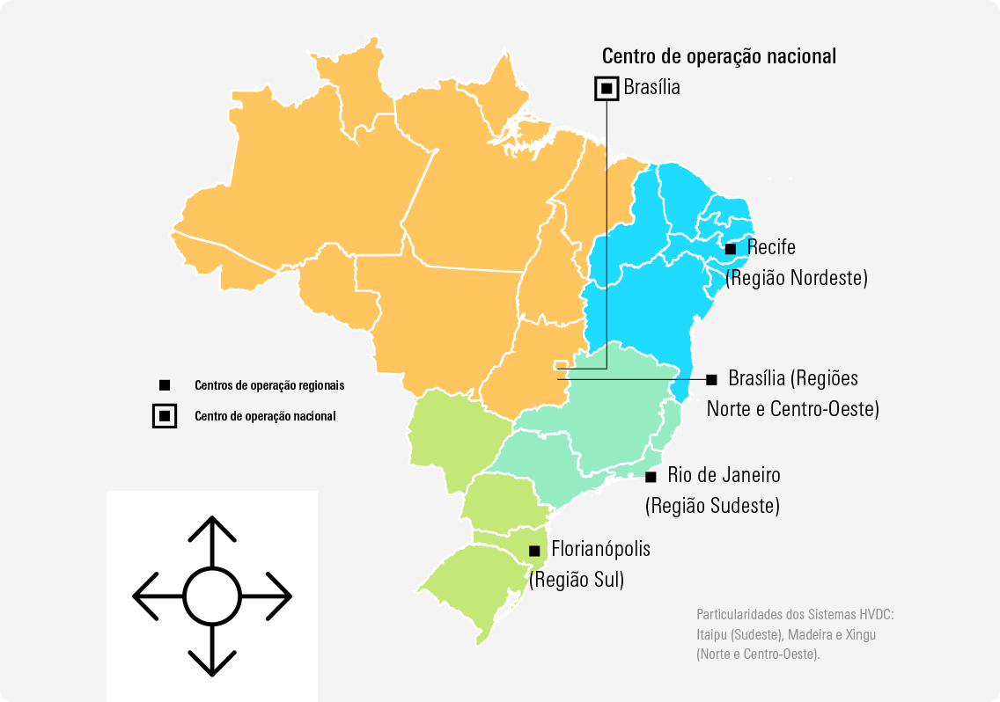
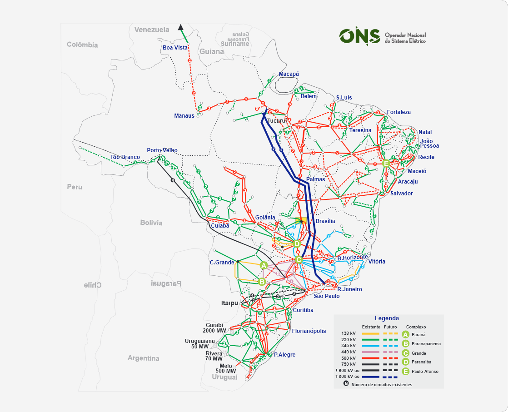
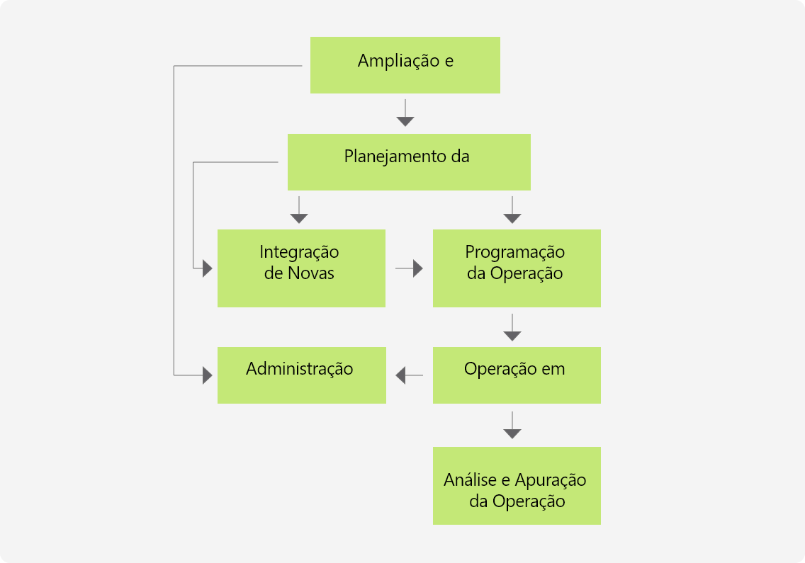
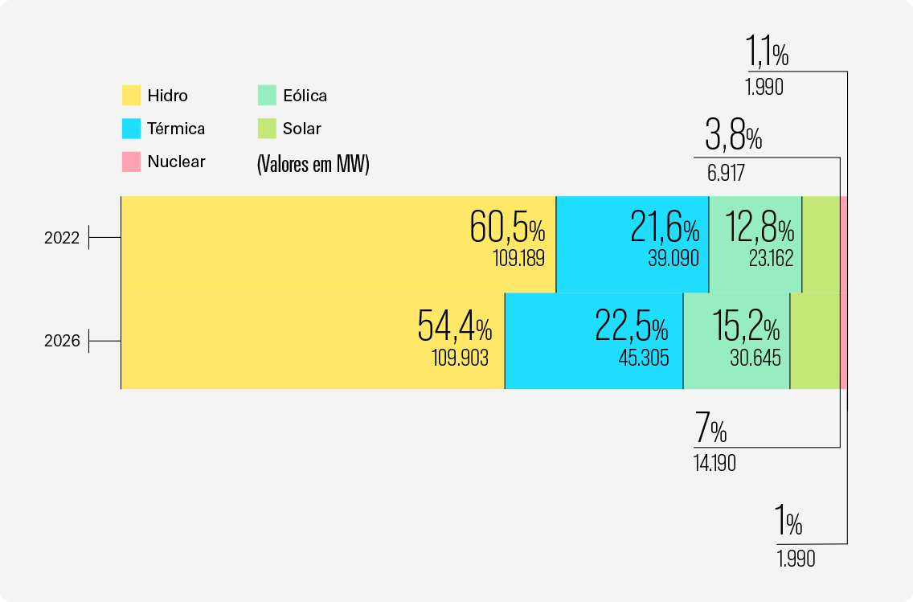
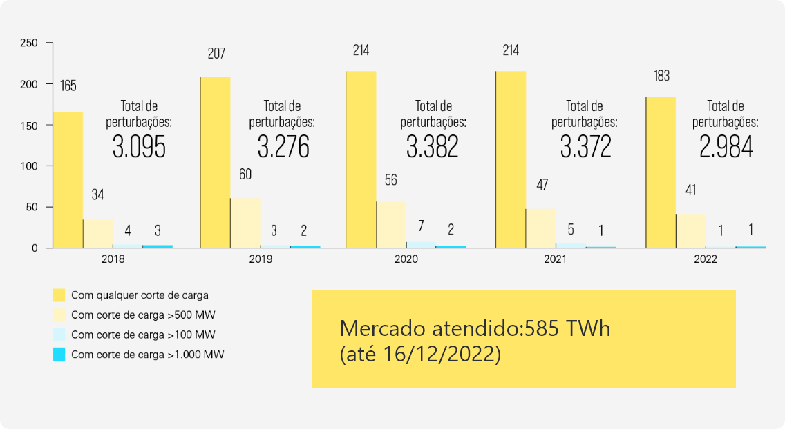
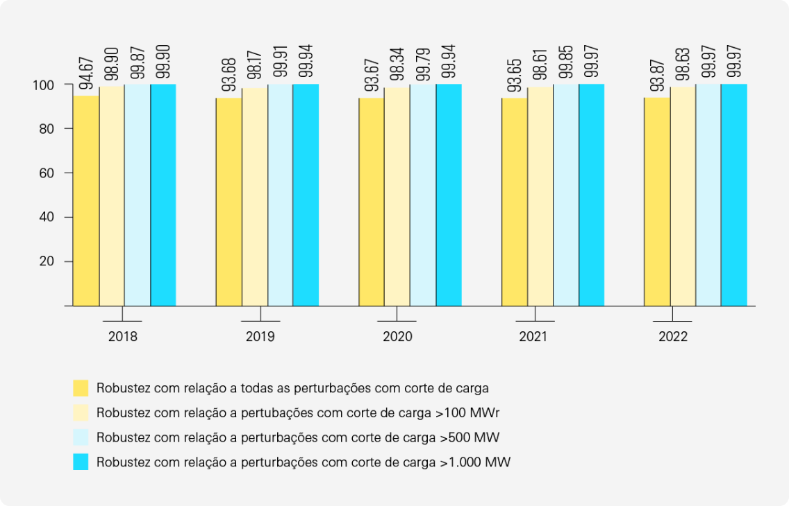
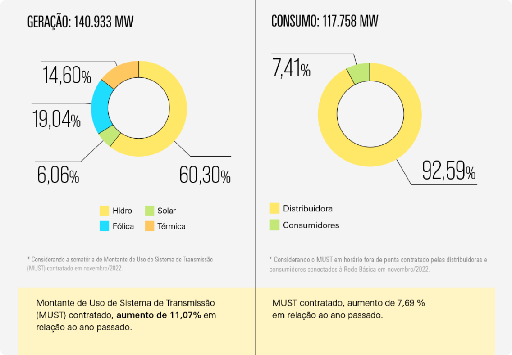

Pela primeira vez, reunimos em um único documento as informações que já vinham sendo reportadas anualmente no Relatório de Administração com o conteúdo do Relatório de Sustentabilidade.
O ONS trabalha 24 horas por dia, 7 dias por semana, para cumprir sua Missão:
Garantir o suprimento de energia no país, com qualidade e equilíbrio entre segurança e custo global da operação.
Coordenamos e controlamos as instalações de geração e transmissão de energia elétrica no Sistema Interligado Nacional (SIN).
Em 2022, as atividades abrangeram 1.438 agentes do setor elétrico, dos segmentos de geração, distribuição e transmissão, em quatro subsistemas (Sul, Sudeste/Centro-Oeste, Nordeste e a maior parte da região Norte).
Propósito
Nos inspira a operar a energia que potencializa a vida.
Membros associados em 2022, nas categorias Consumo, Produção e Transporte.
As regiões operadas pelos Centros de Operação do ONS
A dimensão
do SIN em 2022
O Sistema Interligado Nacional (SIN) cobre quase todo o território nacional, estendendo-se do Amapá ao Rio Grande do Sul, do extremo oriental ao Acre, e atende a praticamente todo o consumo de energia elétrica do país.
GW de geração
GW de geração
distribuída
km de extensão de Linhas de Transmissão ≥ 230 * Fonte Aneel – até 16/12/2022; Dados Abertos ONS – dez/2022
As etapas da atuação do ONS no SIN e os três segmentos (Geração, Transmissão e Consumo) integrados ao Sistema:
Nossas pessoas
em 2022
Em 2022, contamos com
565
empregados para cumprir nossa missão.
Nossas atividades
em 2022
Em 2022, cerca de 80% da energia elétrica suprida pelo ONS para o SIN foi de fontes renováveis, com destaque para a geração hidrelétrica.
Matriz Elétrica Brasileira 2022-2026
Geração solar e eólica são complementares, e em 2026 representarão 22,2% da matriz energética
Destaques da integração – geração
Geração solar e eólica são complementares, e em 2026 representarão 22,2% da matriz energética
Geração solar e eólica são complementares, e em 2026 representarão 22,2% da matriz energética
As evoluções no desempenho e na robustez do SIN em 2022, garantidos por nossa coordenação:
Desempenho do SIN em 2022
Robustez do SIN (em %)
2.984 perturbações registradas em 2022, -10.6% em relação a 2021
Solicitações de Acesso ao SIN
Com o fim do incentivo de desconto da Tarifa de Uso do Sistema de Transmissão, lidamos em 2022 com um grande aumento no número de solicitações de Acesso Permanente ao SIN.
E esses foram os totais dos contratos de transmissão (divididos entre geração e consumo) ao fim do ano:
Contratos de transmissão
O valor que
agregamos à sociedade
cerca de
R$ 30 bilhõesem valor agregado
à sociedade.
Para chegar a este valor total, foram analisadas as atividades abaixo e constatou-se a seguinte economia para a sociedade, por conta da atuação do Operador.
Otimização do uso das interligações entre subsistemas:
R$ 1,4 bilhão
Otimização do uso das interligações entre subsistemas:
R$ 1,4 bilhão
Otimização do uso das interligações entre subsistemas:
R$ 1,4 bilhão
Otimização do uso das interligações entre subsistemas:
R$ 1,4 bilhão
Nossos avanços
em ASG
O ano de 2022 também foi marcado pela consolidação da Estratégia ASG+ do ONS, que aborda os mais relevantes aspectos ambientais, sociais e de governança corporativa (ASG) relativos às nossas operações.
Um passo fundamental foi a definição de uma matriz de materialidade, que reúne os temas mais críticos e relevantes ligados direta ou indiretamente às nossas atividades, formulada com base em entrevistas e pesquisas com nossos stakeholders internos e externos.
Programa ASG+
Iniciado em 2021, o Programa ASG+ é dividido em três pilares: +Humano, +Verde e , cada um com dois temas específicos de atuação.
Confira os destaques abaixo e clique no ícone de cada pilar para conferir outros avanços em 2022.
Destaques da evolução do Programa ASG+ em 2022
ONS +Humano
Governança responsável, ética e transparente
- Boas práticas de governança do Instituto Brasileiro de Governança Corporativa (IBGC): evoluímos de 90.43% para 94.5% de aderência;
- Boas práticas de governança do Instituto Brasileiro de Governança Corporativa (IBGC): evoluímos de 90.43% para 94.5% de aderência;
- Boas práticas de governança do Instituto Brasileiro de Governança Corporativa (IBGC): evoluímos de 90.43% para 94.5% de aderência;
Pessoas integradas:
- Boas práticas de governança do Instituto Brasileiro de Governança Corporativa (IBGC): evoluímos de 90.43% para 94.5% de aderência;
- Boas práticas de governança do Instituto Brasileiro de Governança Corporativa (IBGC): evoluímos de 90.43% para 94.5% de aderência;